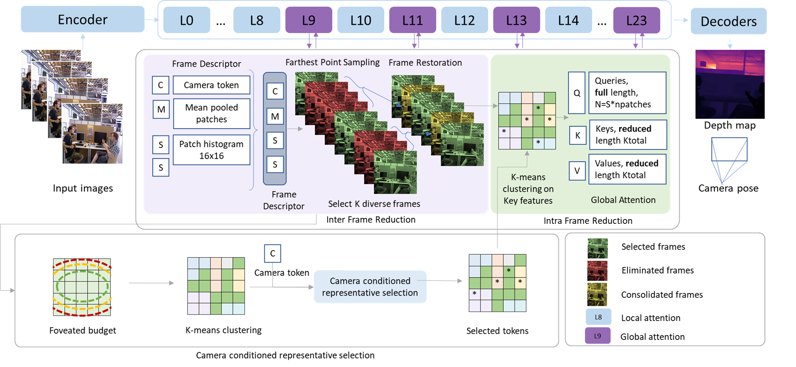
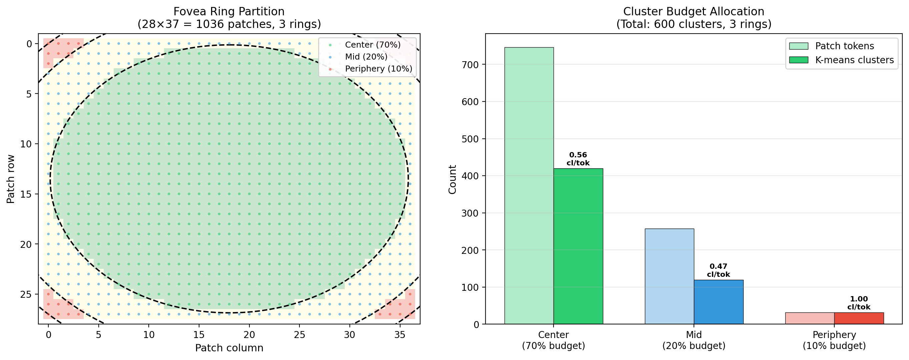
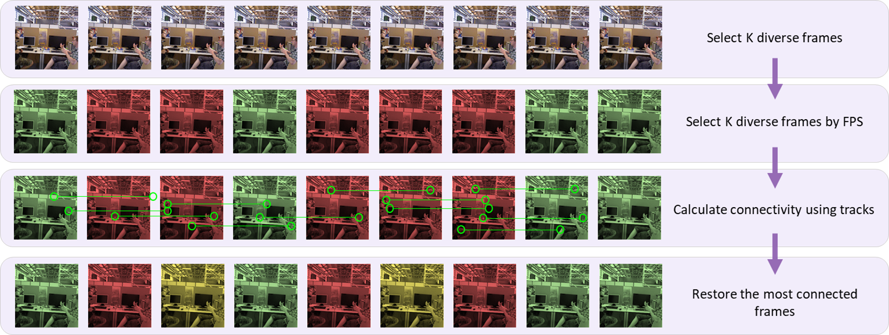
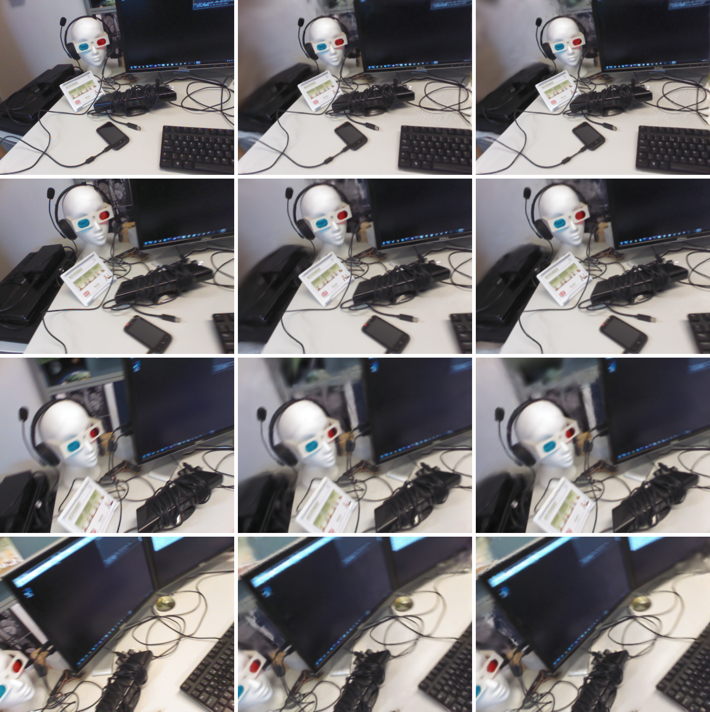
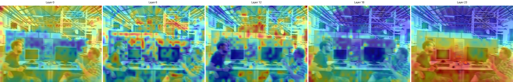

Feed-forward 3D reconstruction transformers jointly predict camera poses, point maps, and depth maps from multiple views in a single forward pass, but their global attention scales quadratically with token count. This latency is the key barrier to running such models on-device for augmented and virtual reality (AR/VR), where strict motion-to-photon latency budgets apply.
We propose DuToR, a training-free framework that exploits redundancy at two levels — across frames and within frames — using only the model's own intermediate features, with no external scene descriptor. For inter-frame selection, Farthest Point Sampling on frame descriptors selects K diverse frames, while connectivity scoring preserves geometric overlap and dynamically restores dropped frames. For intra-frame selection, a fovea ring budget allocation partitions the patch grid into concentric rings and allocates higher cluster density to the center, and per-layer K-means clustering on key features selects representatives. Together, these reduce global attention from quadratic to linear in the number of selected tokens, without retraining.
Experiments across two models (DA3, VGGT) and four benchmarks show DuToR achieves 44% inference speedup on 90-frame sequences and 3.8× speedup on 480-frame sequences with less than 1% ATE degradation, advancing feed-forward 3D reconstruction toward the latency targets of on-device AR/VR.
Visual geometry transformers such as DUSt3R, MASt3R, VGGT, π³, and Depth Anything 3 jointly predict camera poses, point maps, and depth maps from multiple views in a single forward pass. However, their global attention layers scale quadratically with the total number of patch tokens across all views, making inference prohibitively expensive as the number of views grows.
This latency is one of the key barriers to deploying these models on-device for AR/VR, where motion-to-photon latency must remain low to avoid perceptible lag and cybersickness, and head-mounted displays impose power and thermal constraints that rule out cloud offloading.
Existing token reduction methods either merge similar tokens (requiring an unmerge step) or prune unimportant ones, but do not exploit the two-level structure of multi-view attention: redundancy exists both across frames (many views are similar) and within frames (many patch tokens carry similar information).
DuToR is a training-free framework that reduces the computational cost of global attention by exploiting redundancy at two levels. A key design choice: all S frames retain their full queries (Q); only the KV sequence is reduced. This preserves dense predictions for depth and point maps without the unmerge step that token merging methods require.
Farthest Point Sampling on frame descriptors (derived from the model's own intermediate ViT features — no external model needed) selects K diverse keyframes that maximize scene coverage. A connectivity scoring gate using ORB matching monitors geometric overlap between keyframes and restores dropped frames when gaps are detected.
Within each kept frame, K-means clustering on key features selects K_c representative tokens. The patch grid is partitioned into concentric fovea rings with a hard per-ring cluster budget, allocating higher density to the center. A camera-conditioned attention score refines cluster representatives.



DuToR achieves 44% speedup on VGGT (13.91s → 7.78s) and 25% on DA3 (6.92s → 5.16s) on TUM-Dynamics with less than 1% ATE degradation. At 480 frames, DuToR achieves 3.8× speedup over the full-attention baseline while using comparable memory.
| Model | Method | ATE ↓ | RPEt ↓ | RPEr ↓ | Time (s) ↓ |
|---|---|---|---|---|---|
| VGGT | Original | 0.0119 | 0.0099 | 0.31 | 13.91 |
| +GoToHunt | 0.0114 | 0.0100 | 0.31 | 12.23 | |
| +DuToR (ours) | 0.0118 | 0.0099 | 0.31 | 7.78 | |
| DA3 | Original | 0.0139 | 0.0112 | 0.33 | 6.92 |
| +GoToHunt | 0.0132 | 0.0113 | 0.32 | 6.60 | |
| +DuToR (ours) | 0.0125 | 0.0109 | 0.32 | 5.16 |


If you find this work useful, please cite: